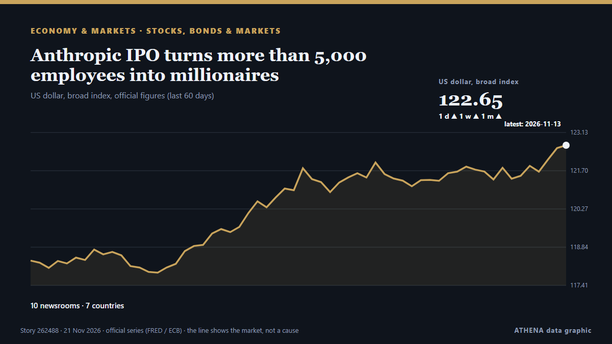

Actions, obligations et marchés
SponsoriséPrésenté par  Cybernetics and Artificial Intelligence Lab Welcome to the Cybernetics and Artificial Intelligence Laboratory, established at the Department of Business Administration of the National and Kapodistrian University of Athens. The lab is headed by Professor Dimitrios Thomakos. The lab aims to do research that can be published in top venues. Our research uses tools and methods of Artificial Intelligence, and lies in the following areas: - Forecasting - Decision making - Cyber security - Finance We are always looking forward to collaborating with exceptional students!
Cybernetics and Artificial Intelligence Lab Welcome to the Cybernetics and Artificial Intelligence Laboratory, established at the Department of Business Administration of the National and Kapodistrian University of Athens. The lab is headed by Professor Dimitrios Thomakos. The lab aims to do research that can be published in top venues. Our research uses tools and methods of Artificial Intelligence, and lies in the following areas: - Forecasting - Decision making - Cyber security - Finance We are always looking forward to collaborating with exceptional students!
| 8 nov. | 0 |
|---|---|
| 9 nov. | 0 |
| 10 nov. | 0 |
| 11 nov. | 0 |
| 12 nov. | 0 |
| 13 nov. | 0 |
| 14 nov. | 0 |
| 15 nov. | 0 |
| 16 nov. | 2 |
| 17 nov. | 0 |
| 18 nov. | 4 |
| 19 nov. | 12 |
| 20 nov. | 6 |
| 21 nov. | 0 |
Les titres sont affichés en anglais, tels que publiés.

Anthropic IPO turns more than 5,000 employees into millionaires
More than 5,000 employees of US-based Anthropic have become millionaires through the value of their shareholdings following the company's stock market debut on Nasdaq. de AzerNews
SK Hynix to become Kioxia's top shareholder with bond conversion
Korean chip giant SK hynix Inc. is considering converting convertible bonds (CBs) linked to its investment in Kioxia Corp., a Japanese NAND flash memory maker, into shares, industry sources said… de The Korea Times
Stocks slide as Anthropic IPO fails to calm AI fears
Investor confidence in AI has been shaken by worries about the technology's profitability and the massive debt needed to fund and build related infrastructure. de Free Malaysia Today
Nasdaq futures jump on renewed AI optimism ahead of Anthropic’s market debut
Nasdaq futures rose more than 2% on Thursday after Anthropic priced its IPO above the marketed range, fueling expectations for a strong market debut and lifting sentiment toward AI-linked stocks… de The San Juan Daily Star
U.S. AI startup Anthropic floats shares on Nasdaq with record IPO
Luxury home sellers are offering multimillion-dollar mansions in exchange for Anthropic stock as the AI giant's IPO approaches. de Business Insider
Anthropic becomes one of world’s most valuable public companies in stock market debut
Anthropic is the first purely AI company to be publicly listed, creating a test for the entire industry. de BBC News
European shares head for steepest weekly drop since March
LONDON: European shares opened lower on Friday and were headed for their steepest weekly decline since March, as investors continued to unwind artificial intelligence (AI)-linked bets after… de New Straits Times
Low-profile VCs set for $100bn windfall from Anthropic IPO
Group of lesser-known investors on track for bumper returns as AI group prepares to price its shares on Wednesday. de Financial Times - Markets
Dude, Where Are My Billions? Ashton Kutcher Edging Closer to Super Rich Status After Anthropic IPO
The actor and famed tech investor's venture capital firm, Sound Ventures holds a roughly 0.5 percent stake in the AI giant. de The Hollywood Reporter
Anthropic IPO draws rush of Japan retail investors
The BBC's Samira Hussain speaks to a retail investor eagerly waiting for the AI company's stock to go live on Thursday. de BBC Business
Anthropic valuation soars above £1.5 trillion in record stock market float
It has eclipsed Elon Musk’s bumper SpaceX float in June as the biggest stock market debut of all time. de Evening Standard (London)
Anthropic Shares End First Day Of Trading Up 17% In Volatile Session As AI Giant Goes Public
UPDATED after market close: Anthropic shares ended their first day of trading at $97.17, up 17% from their $83 IPO price, but off their high for the day, in a volatile session. de Deadline
Asian shares head for worst week since 2020 as AI trade gloom fails to abate
HONG KONG: Asian shares slid on Friday to be on track for their worst week since 2020, as Anthropic’s debut failed to restore investor faith in AI trades, while the dollar extended a rally on… de Business Recorder
Anthropic prices its IPO at $83 a share, valuing it at about $1.5tn
Anthropic has priced its IPO at $83 a share, above the $70 to $78 range it marketed, people familiar with the matter told Natasha Mascarenhas and Bailey Lipschultz of Bloomberg, who reported the… de The Next Web
ASX slumps, Wall Street dives despite strong debut for Anthropic
The Australian sharemarket has declined at the open after Anthropic’s strong debut on Wall Street was not enough to stop the bleeding on Wall Street. de The Age
Newcomer wins top stock market journalism award
Fiji Television journalist Eparama Warua, who “did not even take up anything in business in high school and on to tertiary”, won the Stock Market Journalist of the Year award, a new category, at the… de Post-Courier (PNG)
Boom or Bubble? Understanding AI and the U.S. Economy
Investments in artificial intelligence (AI) have powered much of the U.S. stock market’s gains in recent years. de Council on Foreign Relations
Pierce Brosnan sends message to new James Bond Robert Pattinson
Former James Bond star Pierce Brosnan has given Robert Pattinson his seal of approval, recalling their time working together more than 15 years ago. de Stuff
Anthropic to smash IPO records with £1.13trn valuation
The maker of the Claude artificial intelligence tool has priced its shares at 83 dollars each. de The Irish News (Belfast)